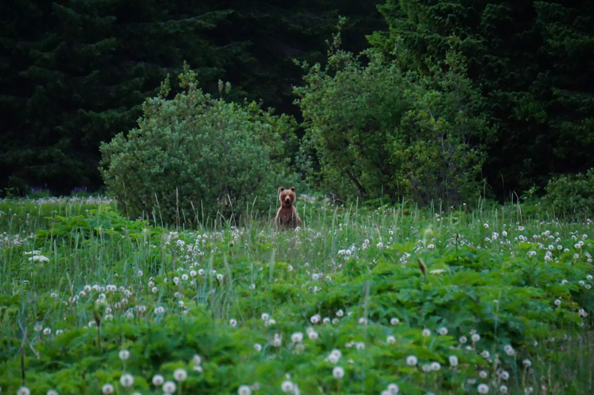
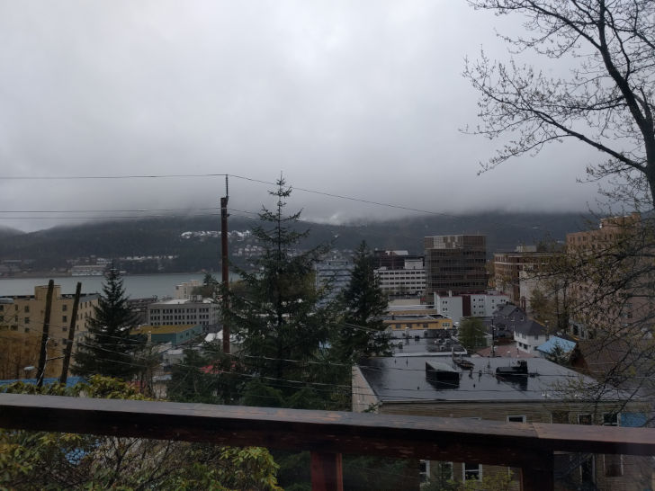

Summer in full swing
Brian Taylor | June 30th, 2021
Well here we are again, it's been a lot longer than I thought it would be between posts here, but dead laptops and new jobs have a way of taking longer than you thought they might - especially when you live in the middle of "nowhere". I would argue that Gustavus is really in the middle of it ALL, for what it's worth, it's just not economically productive enough to be seen that way by most. Fine, I'll take it that way, there's more to life and the world than economic productivity.
I've now migrated from running a linux distro and the bash shell to a windows install and the powershell. It's a little weird to be less comfortable on windows than linux after having spent so many years slowly learning my way around the terminal and installing packages via apt, feeling like I was never going to be comfortable with Linux. Now it's almost like as soon as I got into the swing of it, my linux computer dies on me and I'm back to windows. Which I guess is good. it's been almost a decade and a lot has changed, good to keep up with it.
Life here in Gustavus this summer so far has been remarkably typical considering that the lower 48 is in the throes of a record breaking heat wave and we're just coming out of a pandemic. I'm consistently impressed at the capacity of humans to get comfortable with whatever they have to deal with. The new paradigm becomes 'normal' far quicker than you might think, and in spite of all the strife being pitched on news outlets as click bait, people have been patient and nice and friendly, understanding even.
We've had our paths cross a few times with a local brown bear who's been living on the local nature trail, I think he's one of the cubs that was in their second year with their mom and would come play in the yard last summer. Both Rachel and I get nervous at seeing teenage brown bears roaming through town. He doesn't seem to be trying to find his way into trouble, so we're hopeful that he can find his place in our little town and we won't hear about him getting shot by one of the neighbors because he was trying to get at their chickens or something. In that context it's notable that we place unreasonably high expectations of self restraint on our neighborhood brown bears, and that the ones who meet them aught to be treated as nearly exalted beings for managing such fine behavior in a world where humans can't seem to muster enough restraint to even keep the planet habitable.
Gray days in Juneau
Brian Taylor | May 4th, 2021
A drizzly morning in Juneau, looking across the small downtown cityscape and Gastineau channel over to Douglas island. We're here under the pretense of a dentist appointment, but will likely not even end up having our teeth cleaned. It's really a glorified shopping trip with a long ferry ride on either end - and a happily convenient excuse to visit my cousin and her husband who happen to be remote working in Juneau for a week.
Perhaps, more than anything it's a way for us to take a small bite of what it might feel like to re-enter society in the post pandemic world, to harden ourselves off against the new oddities and nuances of life in the present state of America. The charged energy of a blonde teenage girl wearing a Trump 2020 hoodie "Is she glaring at me?", the minutiae and social protocol of when to wear a mask in a restaurant "You're alright to take those off at your table, guys" the waiter tells us, remembering how to use a self checkout machine "Help is on the way.", and doing our damndest to not wave at literally every single car we pass on the road. "We're not in Gustavus!" we keep telling ourselves.
There's something remarkable about how your sentiments in any given moment pivots around your most recent experience. In our post-European trip mindset Juneau would have felt small and quaint, a tiny speck of a city in a vast wilderness (It is, really) but now coming from Gustavus and our long rainy winter in a 400sq ft. cabin on the edge of the woods it somehow manages to present itself as a bustling metropolis, an oasis of civilization in rugged and unwelcoming landscape, and a hotbed of misanthropic social division at what is hopefully the tail end of a long, cold, dark pandemic year.
It's a whirlwind to be here, a rush of novelty from things we've experienced seemingly countless times before, and yet in a flash it will be over and before we know it we'll be back to planting potatoes in the garden, paddling our double kayak through the Beardslee cut, and wondering whether it will ever stop raining so we can have a bonfire and catch a glimpse of the Fairweathers.
I'm not really sure where to begin
Brian Taylor | April 4th, 2021
For now I'm typing this all out in the atom code editor, not really the best place for creative writing, I'll have to sort out where and how to draft these before adding them to the HTML. Over time I intend to section things off a bit better so I have several modular pieces that I'm strapping together rather than making a whole new HTML page for every entry. Hell, maybe I'll just make the site a one pager and have it all right there on the front page. For now it seems to make sense for this kind of writing to just go with the long long infinite scroll to the right as I write long lines of.. "code".